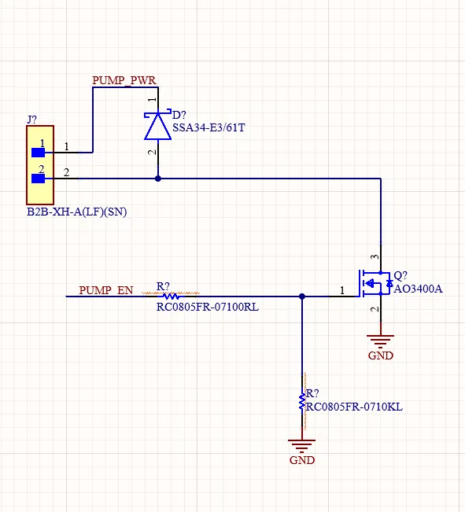
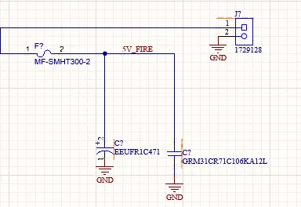

// electrical team · stm32 · altium
In progressNGCP Ground Vehicle
I'm on the electrical team for the ERU, the unmanned ground vehicle in the 2026-27 Northrop Grumman Collaboration Project. This year I'm working with the payload team to add fire suppression to the vehicle's STM32 DAQ board.
Fire suppression
PCB target: end of November 2026The ERU has to put out a simulated fire: cover more than half of a 1 ft by 1 ft target from within 10 ft, triggered by hand from the RC transmitter. Payload is building a small 5 V water pump system. I worked with them to decide which sensors it needs, and I'm designing the circuit that adds it to the existing DAQ board in Altium.

Pump driver
An AO3400A logic-level MOSFET switches the pump, with an SSA34 flyback diode across the motor and a 10k pull-down on the gate so it can't turn on while the microcontroller boots.
Fused 5 V input
A 3 A resettable fuse and bulk capacitors (470 µF and 10 µF), so a jammed servo or a shorted pump can't take down the board or sag the supply.
Aiming servos
Headers for the servos that aim the nozzle, plus the RC trigger signal.
Picking the sensors
We kept what the operator needs: an INA219 for pump current and a pressure transducer to confirm water is actually moving. We cut flow, thermal, and distance sensing, since aiming is manual. I chose an INA219 in a larger package because the board is hand-soldered, and strapped it to I2C address 0x41 so it doesn't collide with the humidity sensor at 0x40.


Learning the vehicle
We inherited last year's boards with little documentation. I studied the schematics for the two STM32 shields, the backplane, the power board, and the motor driver, and documented how power and signals move through the vehicle.
Simplified. Green marks the part I'm adding.